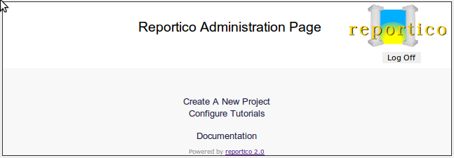
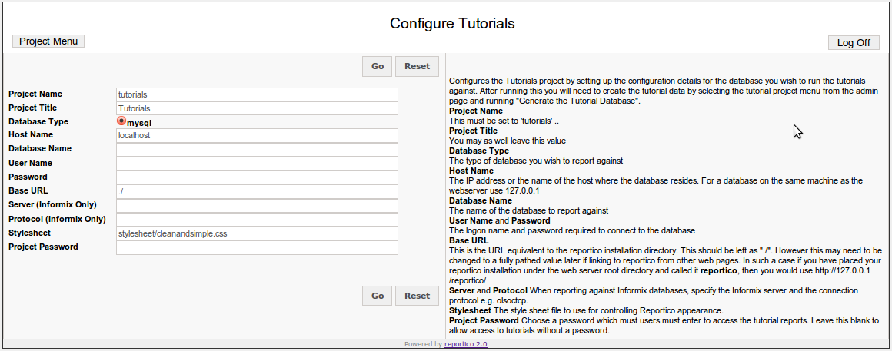
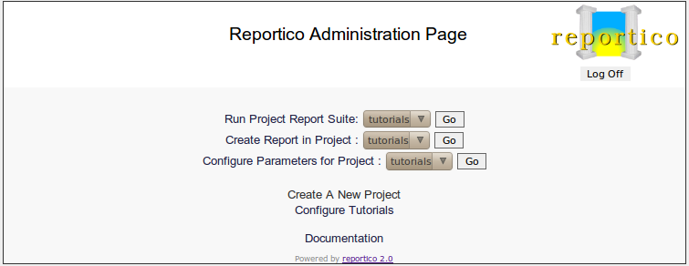
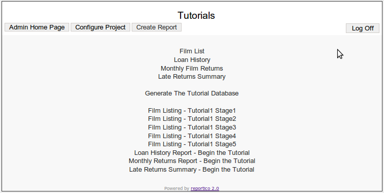
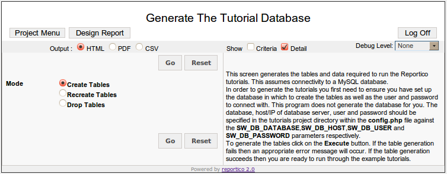

Reportico Tutorial
About the Tutorials
The tutorials are designed firstly to get you going with a simple report and then build more complexity in one feature at a time.
You must be logged in as Administrator to follow the tutorials as you need to be able to access report design mode
The tutorials represent a reporting system for an imaginary DVD library. In order to run the tutorials on your own site you will need to set up the tutorial database tables. The tutorial menu system provides a link to allow quick set up of the tutorial data. Alternatively, you can try the tutorials on the Reportico web site ( without being able to modify them yourself ) by following the link http://www.reportico.org/swsite/site/tutorials/ but it is recommended that you work through on your own site.
Configure the Tutorial Database
You must have an existing MySQL database set up to run the tutorials. Before you can generate the tutorial data you need to configure the tutorial project to know about your database. To do this select the Configure Tutorials from the Administration Page ( you will need to be logged in as Administrator ) as follows :-

Selecting the Configure Tutorials brings up the following screen :-

Follow the onscreen instructions. Once configured you need to return to the administration page by clicking the Project Menu option, and then select Run Project Report Suite option on the tutorials as shown on the following screen :-

You are now in the tutorials project menu as follows :-

Setting up the Tutorial Database
From the tutorial project menu select the Generate Tutorial Database to open the following screen :-

If setting up for the first time, leave the Create Table option selected and press the Go button. You may recreate the tables by choosing the Recreate Tables option.
The Tutorial Database
The tutorial DVD library reporting system provides the data and reports to get information about films, library members and film rentals. The database comprises 5 tables as follows :-
1. Table reptut_film
The film table contains all the films available at the DVD library. Each film record contains its country and category by linking to the country and category tables respectively.
CREATE TABLE reptut_film (
film_id int(11) NOT NULL auto_increment,
title varchar(30) NOT NULL default '',
cat_code char(1) NOT NULL default '',
year year(4) NOT NULL default '0000',
length smallint(6) NOT NULL default '0',
rating char(3) NOT NULL default '',
country_code varchar(5) default 'USA',
PRIMARY KEY (film_id)
);
2. Table reptut_member
The member table contains all the members of the DVD library.
CREATE TABLE reptut_member (
member_id int(11) NOT NULL auto_increment,
fullname varchar(30) NOT NULL default '',
join_date date NOT NULL default '0000-00-00',
PRIMARY KEY (member_id)
)
3. Table reptut_loan
History of rentals of films. Since this contains date data, the records are automatically generated relative to the date of table creation, to produce sensible report data. Re-run the table generation to create more up to date records.
CREATE TABLE reptut_loan (
film_id int(11) NOT NULL default '0',
member_id int(11) NOT NULL default '0',
loan_date datetime default NULL,
return_date datetime default NULL
)
4. Table reptut_category
The categories that a film can fall into - Comedy, Drama etc
CREATE TABLE reptut_category (
cat_code char(1) NOT NULL default '',
cat_desc varchar(30) NOT NULL default '',
PRIMARY KEY (cat_code)
)
5. Table reptut_country
Lists the countries that a film was produced in - also we store the image of flag of the country for demonstration of the graphical reporting capabilities of Reportico.
CREATE TABLE reptut_country (
country_code varchar(5) default NULL,
country_name varchar(20) default NULL,
flag blob
)
The Tutorial Reports
The tutorials involve manually setting up the reports in stages. All the tutorial reports created in this section are already available within the tutorials directory under the main Reportico installation area so that you can easily try out the finished version before creating your own.
Run a report by selecting the appropriate entry from the tutorials report menu. To run the tutorials project menu, you can run the tutorials project menu from the Administration page or alternatively you can point your browser at the URL of http://{server_address}/reportico/run.php?project=tutorials.
Instructions for running each report are provided in the following tutorial chapters and on the report screens themselves.